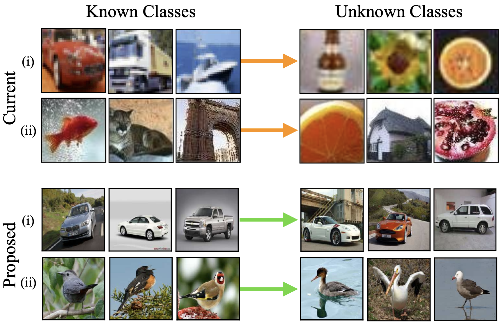

The Semantic Shift Benchmark (SSB) challenge focuses on open-set recognition and the generalized category discovery problem.
The SSB benchmark can be accessed from [here] or [here].
For an understanding of the generalized category discovery problem, the readers can refer to the works [here] and [here].
Track-1: Open-Set Recognition: This track evaluates the ability of the model to identify open-set examples. This track has only one leaderboard, only models that are not trained on ImageNet-22k can be submitted.
The ranking will be determined based on the average score of FPR and AUROC.
A baseline is provided [here].
Track-2: Generalized Category Discovery: This track evaluates the ability of the model to discover and recognize novel concepts within an unlabeled dataset. This track has two leaderboard, one for self-supervised pretrained models on ImageNet-1k, one for any self-supervised pretrained models.
The ranking will be determined based on the average clustering accuracy on all three datasets in the FGVC dataset from SSB benchmark.
We provide a baseline for GCD [here].